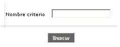
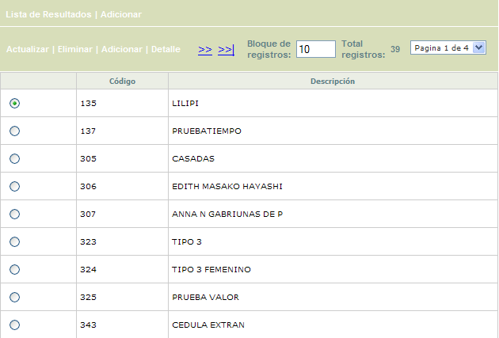
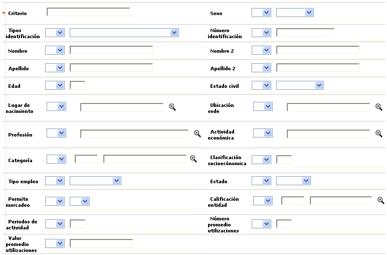
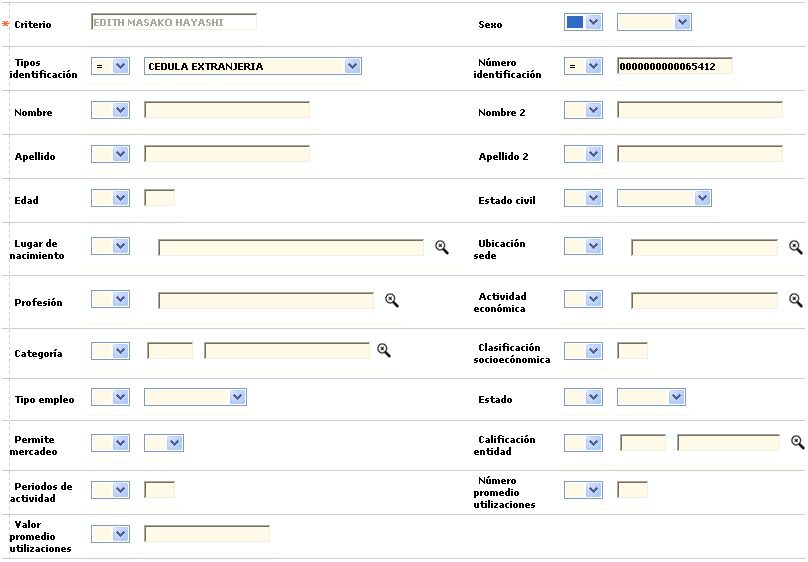
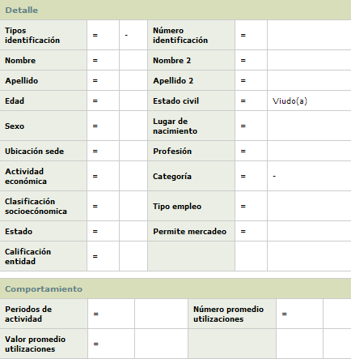

|
Segmentación de clientes |
Mediante esta función se provee una herramienta de mercadeo que permite la segmentación de los clientes, mediante la creación de grupos de información sobre los mismos de acuerdo con los criterios de selección que la entidad estime necesarios.
Filtro: El formulario cuenta con un filtro inicial, que puede ser utilizado para agilizar la búsqueda de un Criterio.

|
Nombre criterio |
Si el usuario invoca el filtro, el sistema le debe permitir ingresar cualquier valor alfanumérico de máximo 30 caracteres. |
El formulario contiene las opciones Actualizar, Eliminar, Adicionar, y Detalle. Adicionalmente, cuenta en la parte superior con las opciones Lista de resultados y Adicionar.

Adicionar: Si el usuario invoca esta opción, se despliega un formulario con los siguientes campos, a través del cual se ingresa un nuevo Criterio.
Criterios: Mediante la combinatoria de este conjunto de campos la entidad define las condiciones que requiera para suplir sus necesidades de información. Los campos son de libre elección por parte de la entidad y por lo tanto no se requiere marcar todos los criterios para que la información sea suministrada, a excepción del campo nombre de criterio, puesto que éste será el que permita identificar una consulta específica de las otras; debe tenerse presente que todos los campos permiten indicar si el resultado de la segmentación debe mostrar los clientes cuya característica sea igual (=) ó diferente (!=) al valor especificado por la entidad para cada criterio seleccionado, es decir, si deben ser incluídos o excluídos de la lista correspondiente.

|
Criterio |
La entidad debe definir el nombre con el cual identificará dicha información cada vez que genere la consulta si así lo requiere. |
|
Sexo |
Campo en el cual la entidad selecciona a través de la lista de valores adjunta el género de los clientes (Masculino o Femenino) al que deben estar asociadas las tarjetas sobre las cuales desea generar la información. |
|
Tipo identificación |
Campo que contiene una lista de valores de los cuales la entidad escoge sobre cuál de ellos desea realizar la consulta. Una Vez seleccionado el tipo de documento el campo permite, aunque no lo requiere, que se le asigne un valor determinado, para generar la información deseada. Si no se asigna ningún valor la información obtenida corresponderá a todas las tarjetas pertenecientes a clientes cuya identificación sea igual o diferente al tipo de identificación seleccionado más las demás variables, si las hay. |
|
Número identificación |
Se define el número de identificación del cliente que se quiere consultar o en su defecto excluir de la selección. |
|
Nombre / Nombre 2 |
Campos en los cuales la entidad ingresa el primer y/o segundo nombre correspondiente a los clientes que se desea incluír o excluír de la lista de segmentación. |
|
Apellido / Apellido 2 |
Campo en los cuales la entidad ingresa el primer y/o segundo apellido correspondiente a los clientes que se desea incluír o excluír de la lista de segmentación. |
|
Edad |
Campo en el que se indica una valor de referencia y permite especificar si la condición a cumplir para ser incluído o excluído de la lista de segmentación es que la edad del cliente sea igual, diferente, menor o mayor a la registrada en este campo. |
|
Estado civil |
En este campo se selecciona de la lista de valores adjunta el estado civil actual del cliente (Viudo, Soltero, Religioso, Divorciado, Casado u Otro) al que deben estar asociadas las tarjetas a incluír o excluir de la segmentación. |
|
Lugar de nacimiento |
Este campo permite mediante una lista de valores, poblada por medio de la opción Información geopolítica seleccionar el municipio o ciudad en el que debe haber nacido el cliente para ser incluído o excluído de la lista. |
|
Ubicación sede |
Campo en el que se selecciona de la lista de valores el municipio o ciudad en el que debe residir el cliente para ser incluído o excluído de la lista. |
|
Profesión |
En este campo se selecciona de la lista de valores la Profesión que debe tener el cliente para ser incluído o excluído de la segmentación. |
|
Actividad económica |
Campo con lista de valores de la que se selecciona la Actividad económica desempeñada por el cliente para ser incluído o excluído de la segmentación. |
|
Categoría |
En este campo se selecciona de la lista de valores la Categoría a la que debe pertenecer el cliente para ser incluído o excluído de la segmentación. |
|
Clasificación socioeconómica |
Campo en el que se registra el estrato socio económico al que debe pertenecer el cliente para ser incluído o excluído de la segmentación. |
|
Tipo empleo |
En este campo se selecciona de la lista de valores adjunta el tipo de empleo que debe tener el cliente (Ama de casa, Jubilado, Socio, Independiente, Empleado u Otro) para ser incluído o excluído de la segmentación. |
|
Estado |
En este campo se selecciona de la lista de valores adjunta la condición actual que debe tener el cliente (Inactivo o Activo) para ser incluído o excluído de la segmentación. |
|
Permite mercadeo |
En este campo se selecciona de la lista de valores la opción correspondiente, cuando el criterio para ser incluído o excluído de la lista es Si o No el cliente permite mercadeo. |
|
Calificación entidad |
En este campo se selecciona de la lista de valores la Calificación (institucional) asignada por la entidad, a la que debe pertenecer el cliente para ser incluído o excluído de la segmentación. |
|
Periodos actividad |
En este campo se indica un número de periodos como punto de referencia y permite especificar si la condición a cumplir para ser incluído o excluído de la lista de segmentación es que el número de periodos de actividad del cliente sea igual, diferente, menor o mayor al registrado en este campo. |
|
Número promedio utilizaciones |
En este campo se indica un número promedio de utilizaciones como referencia y permite especificar si la condición a cumplir para ser incluído o excluído de la lista de segmentación es que el promedio de utilizaciones que el cliente presenta sea igual, diferente, menor o mayor al registrado en este campo. |
|
Valor promedio utilizaciones |
En este campo se indica un valor promedio de utilizaciones como referencia y permite especificar si la condición a cumplir para ser incluído o excluído de la lista de segmentación es que el valor promedio de utilizaciones que el cliente presenta sea igual, diferente, menor o mayor al registrado en este campo. |
Actualizar: Si el usuario invoca esta opción, se despliega un nuevo formulario en el cual todos los campos son modificables, exceptuando el Criterio. Una vez definidos los criterios sobre los cuales se evaluará la información, la entidad puede en un momento determinado adicionar nuevos criterios y luego, los datos obtenidos se reflejarán en la carpeta de resultados junto con la información presentada antes de dicha adición.

Detalle: Si el usuario invoca la opción Detalle se despliega el siguiente formulario:

Aplicar: Cuando se utilice esta funcionalidad, el sistema debe desplegar un nuevo formulario titulado Resultados, con el nombre del Criterio y subtítulo 'Resultados' y contener los siguientes campos para cada uno de los registros desplegados: Tipo de identificación, Número de identificación, Nombre del cliente y campo de marca para seleccionarlos para eliminarlos de la lista
|
Aplicar: Una vez definidos los criterios sobre los cuales se evaluará la información se debe accionar este botón. Posteriormente, los datos obtenidos se reflejarán en la carpeta de resultados. Cada criterio de consulta queda guardado incluyendo sus parámetros, para que el usuario los pueda consultar, modificar o eliminar. |